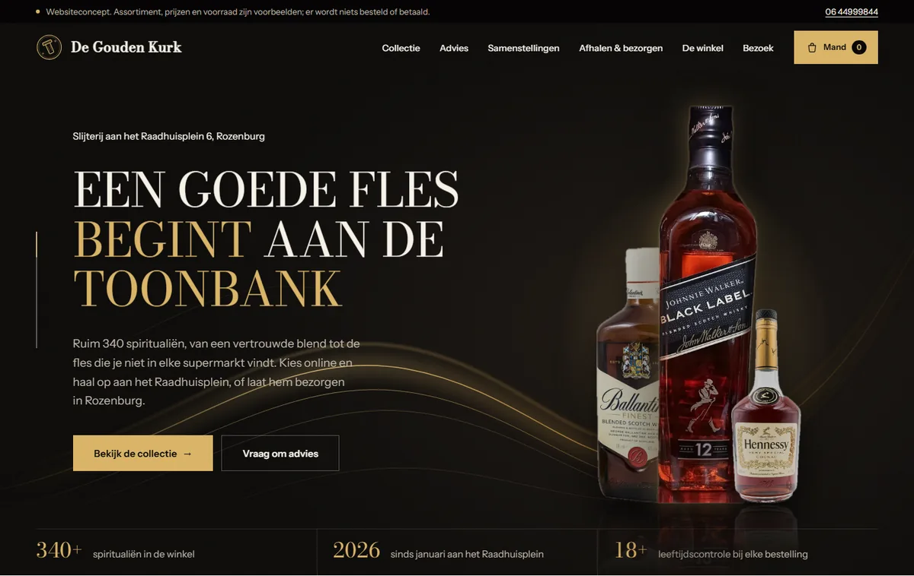
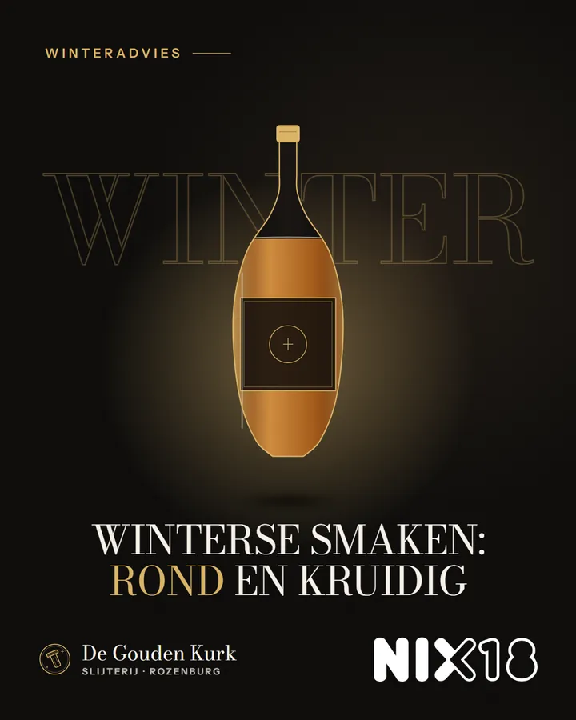
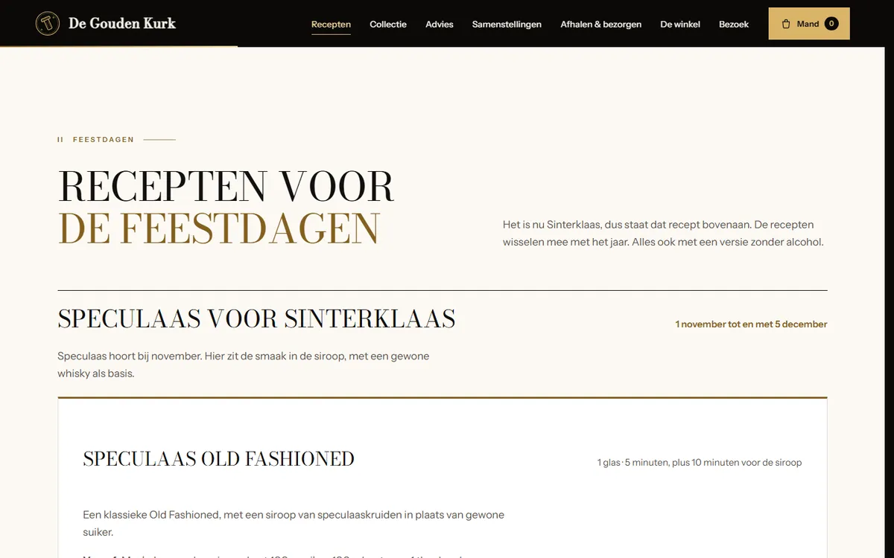
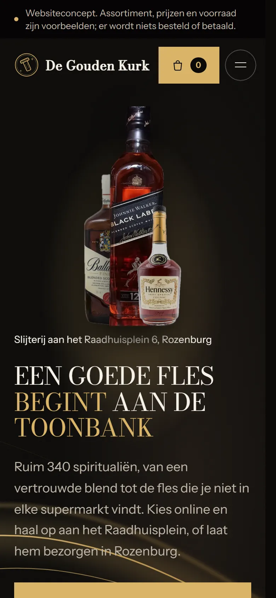
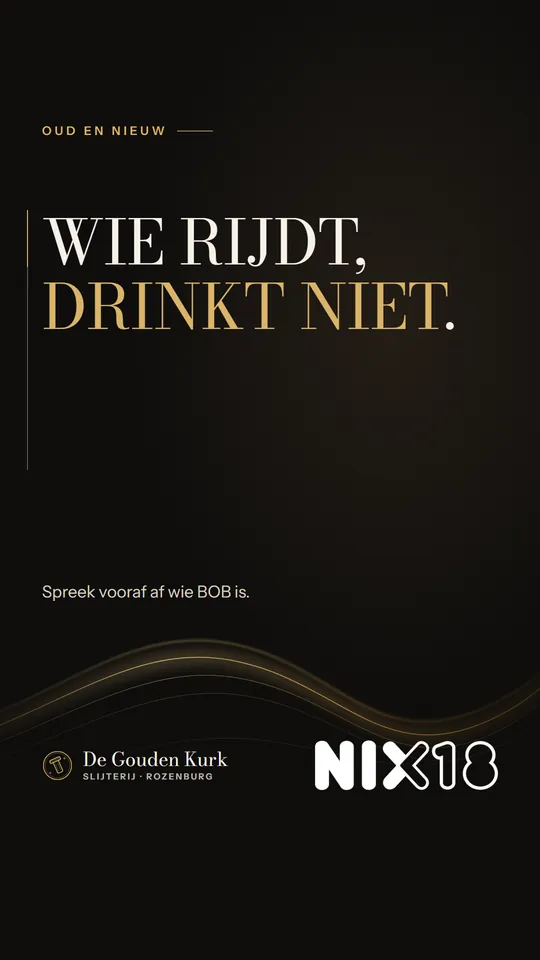
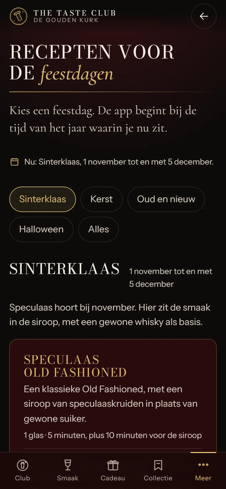
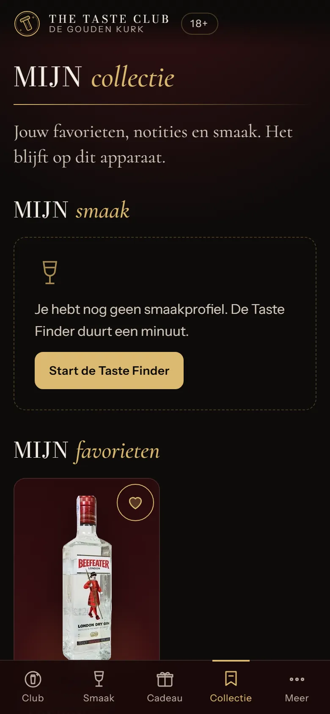

Voorstel van WebRnds · november 2026
De Gouden Kurk, een voorproefje
Een website, twee maanden social media en een app om smaak te ontdekken. Kies waar u wilt beginnen; elk onderdeel opent ook los in de browser.
-

Website De winkel online, in zwart en goud, met recepten die meegaan met het jaar -

Social media Twee maanden Instagram en Facebook -
 App
The Taste Club: smaak, cadeau, collectie en recepten
App
The Taste Club: smaak, cadeau, collectie en recepten
-
 Volgende stap
Wat we nog kunnen doen en wat we van u nodig hebben
Volgende stap
Wat we nog kunnen doen en wat we van u nodig hebben
Alles is een concept: er wordt niets besteld of betaald, en flessen, prijzen en voorraad zijn voorbeelden.
IDe website
Online net zo uitnodigend als aan de toonbank
Bekijk de website (opent in een nieuw tabblad)- De collectie zoeken, filteren per soort en sorteren, met een venster per fles.
- Advies aan de toonbank en drie samenstellingen voor een cadeau, proeverij of borrel.
- Afhalen of bezorgen in Rozenburg, met een proefbestelling en leeftijdscontrole.
- Verantwoord: 18+-poort, NIX18, een privacypagina, geen cookies en geen tracking.
- Beweging in zwart en goud, op laptop en telefoon, en rustig bij "minder beweging".
- Recepten voor de feestdagen: de site laat zelf het recept zien dat bij de tijd van het jaar past. Nu is dat speculaas voor Sinterklaas.
- Een brug naar de app The Taste Club, onderaan de pagina.


IISocial media
Twee maanden berichten die Rozenburg leren kennen
Bekijk het socialpakket (opent in een nieuw tabblad)- 24 posts, 6 carrousels, 24 stories en 12 Facebookposts van 16 november tot en met 14 januari.
- Per dag gepland, met caption, oproep en hashtags; de kalender opent ook in Excel.
- Maand 2 rond de feestdagen: winteradvies, cadeaus, aan tafel en een BOB-bericht bij oud en nieuw.
- Weetjes en advies in plaats van acties: whiskyregio's, port, rum, een etiket lezen.
- Volgens de regels: NIX18 in elk beeld en een automatische tekstcontrole op prijzen, merknamen en aanzetten tot drinken.
- Online portfolio met alle beelden en captions, om rustig door te bladeren.




IIIDe app
Smaak ontdekken, cadeau kiezen, onthouden wat je proeft
Bekijk de app (opent in een nieuw tabblad)- Taste Finder: zes vragen, een smaakprofiel en flessen uit de winkel die erbij passen.
- Cadeauhulp met een eigen boodschap en een knop om de winkel te bellen.
- Mijn collectie: favorieten, proefnotities en flessen naast elkaar. Een voorbeeldcollectie laadt met één klik.
- Recepten voor de feestdagen: kies Sinterklaas, Kerst, Oud en nieuw of Halloween. Elk recept heeft ook een versie zonder alcohol.
- The Golden Pick en verhalen; proeverijen verschijnen zodra u ze bevestigt.
- Op het beginscherm van iPhone en Android, en ook zonder internet te gebruiken.
- Beheer: flessen, Golden Pick, evenementen en verhalen zelf aanpassen.



Zelf proberen
- Scan de code met uw telefoon, of open de app via de knop hierboven.
- Bevestig dat u 18 of ouder bent. Nieuw? Volg de korte rondleiding op de startpagina.
- Beheer: tik op Meer, dan Beheer (demo), en vul pincode 1234 in.
Dit is een demo. Wat u in het beheer verandert, blijft alleen op uw eigen apparaat en gaat nergens heen. De pincode is geen echte beveiliging; echt beheer krijgt een eigen inlog.
IVDe volgende stap
Van voorproefje naar de echte winkel
Wat wij nog meer kunnen doen
- Live op een eigen domeinnaam, met een e-mailadres van de winkel.
- Een echte webshop: assortiment, prijzen en voorraad gekoppeld, online betalen en leeftijdscontrole bij aflevering.
- Fotografie van de winkel en de flessen, voor de site, de app en social.
- Korte video's en reels: de zes productieplannen liggen al klaar.
- Social media bijhouden: elke maand nieuwe berichten, plaatsen en reageren.
- Recepten die meebewegen met het jaar: de site en de app wisselen zelf van feestdag. Wij schrijven voor elke periode nieuwe recepten, ook voor Koningsdag, Pasen en de zomer.
- Google Bedrijfsprofiel inrichten, met route, foto's en tijden.
- De app als echte versie: inlog voor het beheer, evenementen en nieuws vanaf één plek.
- Onderhoud en hosting, zodat alles veilig en actueel blijft.
Wat we van u nodig hebben
- Uw assortiment, prijzen en openingstijden, of wat daarvan op de site mag.
- Eigen foto's, of toestemming voor de winkelfoto uit Rodi.
- Bedrijfsgegevens (KvK) en wie verantwoordelijk is voor privacy.
- Uw akkoord op de teksten en weetjes van het socialpakket.
- Toegang tot Instagram en Facebook, met de leeftijdsgrens op 18+.
Vragen of meteen verder?
Laat ons weten wat u ervan vindt, of welk onderdeel u als eerste wilt.